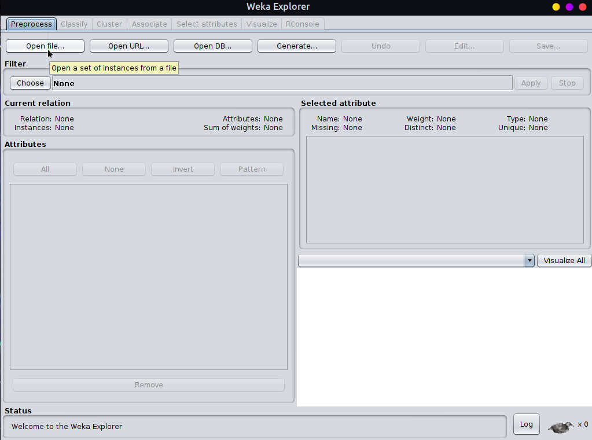
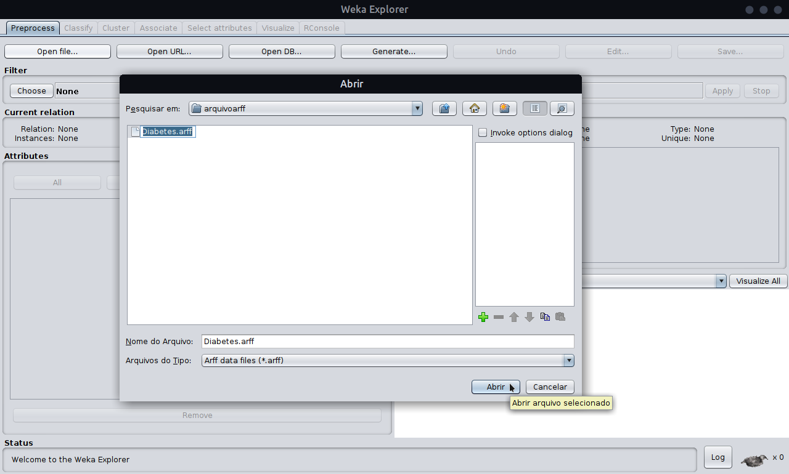
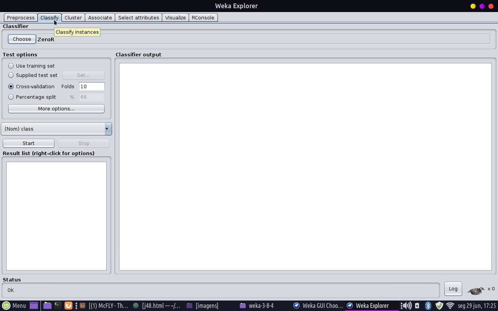
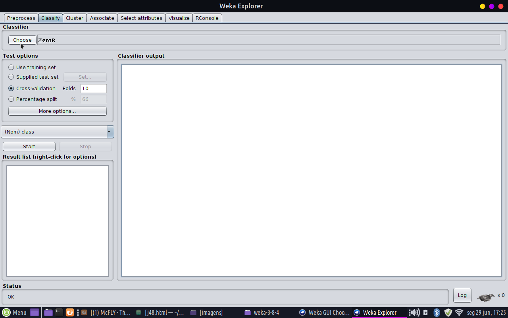
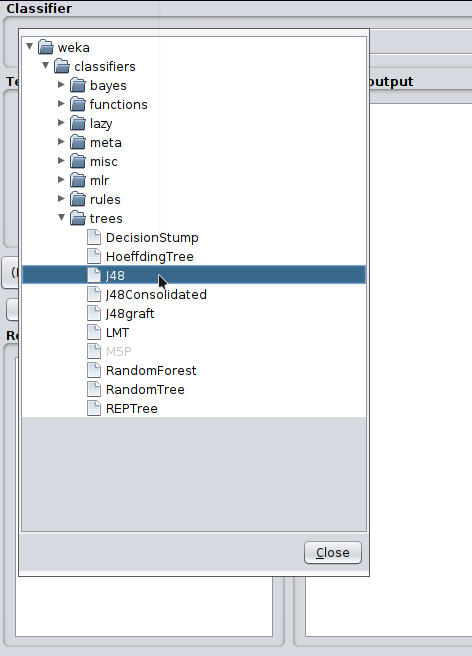
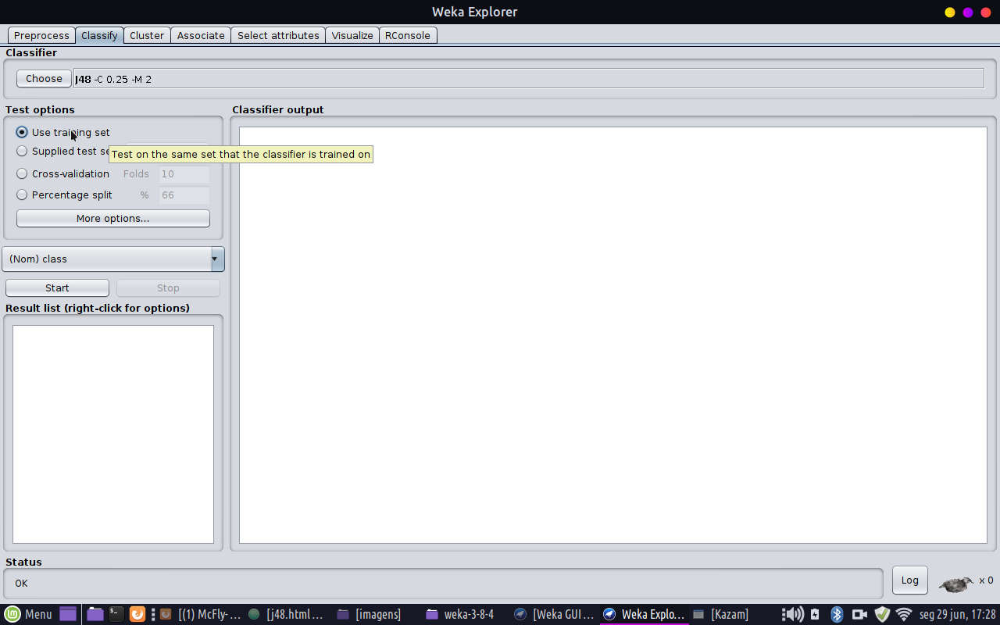
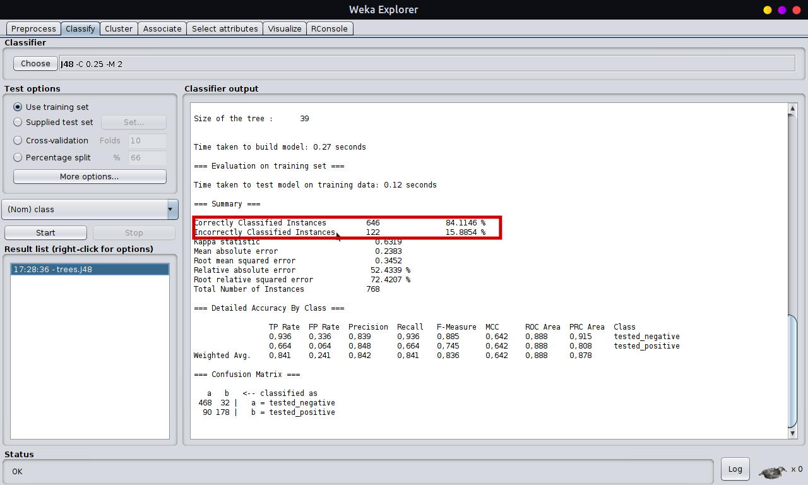
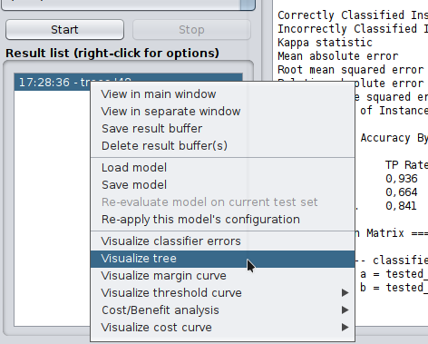
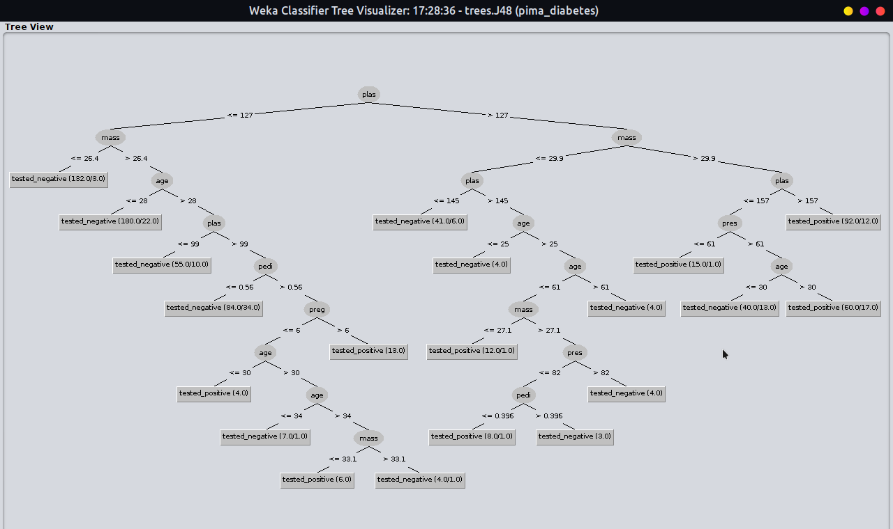

J48
Resumo
Utilizando o J48
Aqui irei abordar uma forma de utilizar o J48 de forma simples!
Primeiramente iremos copiar um arquivo que disponibilizarei
aqui
Copie todo o texto da página e cole em qualquer editor de texto e salve-o com extensão (.arff).
Após ter salvo vamos abrir o Weka

Em seguida vamos clicar no explorer:
O passo seguinte é abrir o arquivo que você deseja em Open File...:

abra-o dessa forma:

Após abrí-lo clique em classify:

Em seguida vá em choose:

Vá em tree e clique no J48:

Depois clique em Use training set:

Ao lado podemos ver qual a taxa de corretos e de incorretos:

Depois clique com o botão direito no arquivo e vá em visualizar tree:

Em seguida irá abrir uma árvore transversal:

E é dessa forma que utilizamos o J48!